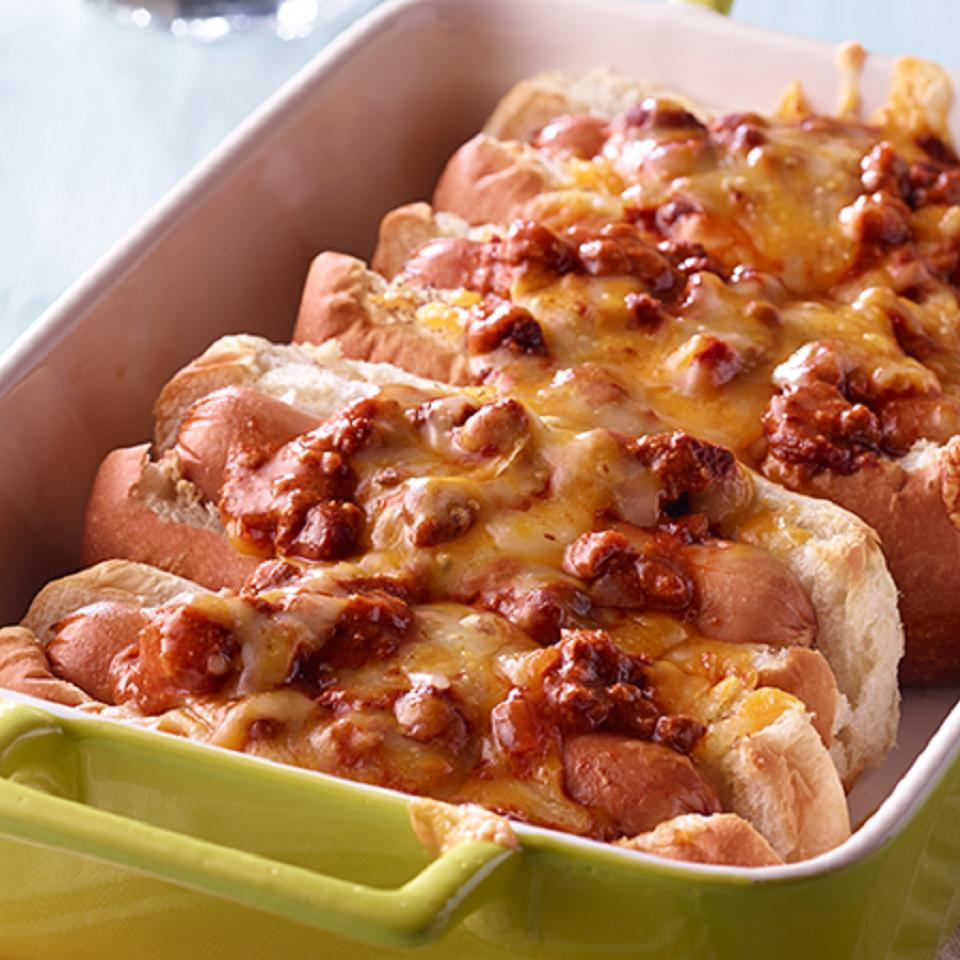

Baked Chili Hot Dogs

I do not recommend the consumption of this meal if you have bowel problems... Seriously
Tailgate or party, or just a lazy sunday, best meal you'll have on this side of the continent
What you'll need:
- 6 hot dogs
- 6 split hot dog buns
- 15 oz Chili with Beans
- 1 cup shredded cheddar cheese
Preparation:
- Heat oven to 350 degrees F. Grease 9 x 13-inch baking dish.
- Heat hot dogs according to package directions. Arrange hot dog buns in baking dish, cut side up. Place hot dogs in buns. Top with chili. Sprinkle with cheese. Tent pan with foil.
- Bake 15 to 20 minutes or until hot and cheese is melted